Index of Topics
- - A -
- Accessing On-line Documentation
Adding Multiple Targets
- C -
- Changes in 10.6 that may Require Recompilation
Changes in 11.0 that may Require Recompilation
Changes in Microsoft Win32 SDK Support for 11.0
Changes that may Require Recompilation
Changes to the C Library
Changes to the C/C++ Libraries for 11.0
Changes to the Code Generator for 11.0
Changes to the Compiler Tools for 11.0
Changes to the Dialog Editor
Changes to the DOS Graphics Library for 11.0
Changes to the Image Editor
Changes to the Resource Compiler
Changes to the Resource Editor
Contacting Technical Support
Correcting an Error
- D -
- Debugging the Program
Defining a Project
Documentation
DOS Developers
- E -
- Editing a Bitmap
Editing Menus
Executing the Program
Extended DOS Developers
- H -
- Hands-on Introduction to Open Watcom FORTRAN 77
Hardware and Software Requirements
- I -
- Incremental Installation
Information Technical Support Will Need to Help You
Installation
Installation Notes for OS/2
Installation Notes for Windows 3.x
Installing Open Watcom FORTRAN 77
Introduction to Open Watcom FORTRAN 77
Items No Longer Supported
- M -
- Major Differences from Version 10.5
Major Differences from Version 10.6
Major Differences from Version 9.0
Major Differences from Version 9.5
Making a Target
Making All Targets
- O -
- On-line Documentation under DOS
On-line Documentation under OS/2
On-line Documentation under Windows
The Open Watcom FORTRAN 77 Tutorial
OS/2 Developers
Outline
- R -
- The README File
Release Notes for Open Watcom FORTRAN 77 1.9
Resources at Your Fingertips
- S -
- Sampling and Profiling an Executable
Saving the Project and Terminating the Session
Smart Editing
Suggested Reading
Sybase Open Watcom Public License
System Configuration File Modifications
- T -
- Technical Support and Services
Trouble-Shooting
Tutorial Review
- W -
- What is in version 1.9 of Open Watcom FORTRAN 77?
Win-OS/2 and OS/2 Specific
Windows 3.x Developers
Windows 95 Help File Format
Windows NT Developers
Introduction to Open Watcom FORTRAN 77
Welcome to the Open Watcom FORTRAN 77 1.9 development system. Open Watcom FORTRAN 77 is an Open Source successor
to commercial compilers previously marketed by Sybase, Powersoft and originally WATCOM International Corp.
Version 1.9 of Open Watcom FORTRAN 77 is a professional, optimizing, multi-platform FORTRAN 77 compiler with a comprehensive
suite of development tools for developing and debugging both 16-bit and 32-bit applications for DOS, extended DOS, Novell
NLMs, 16-bit OS/2, 32-bit OS/2, Windows 3.x, Windows 95/98/Me, Win32s, and Windows NT/2000/XP (Win32).
You should read the entire contents of this booklet, as it contains information on new programs and modifications
that have been made since the previous release.
Special NOTE to users of previous versions! See the section entitled Release Notes for Open Watcom FORTRAN 77 1.9
to determine if you need to recompile your application.
What is in version 1.9 of Open Watcom FORTRAN 77?
Version 1.9 incorporates the features professional developers have been demanding:
- Open, Multi-target Integrated Development Environment
- The IDE allows you to easily edit, compile, link, debug and build applications for 16-bit systems like DOS, OS/2 1.x, and
Windows 3.x and 32-bit systems like extended DOS, Novell NLMs, OS/2, Windows 3.x (Win32s), Windows 95/98/Me, and Windows
NT/2000/XP. Projects can be made up of multiple targets which permit a project to include EXEs and DLLs. The
IDE produces makefiles for the project which can be viewed and edited with a text editor. The IDE is hosted under Windows
3.x, Windows 95/98/Me, Windows NT/2000/XP, and 32-bit OS/2.
The Widest Range of Intel x86 Platforms
-
- Host Platforms
-
- DOS (command line)
- 32-bit OS/2 (IDE and command line)
- Windows 3.x (IDE)
- Windows 95/98/Me (IDE and command line)
- Windows NT/2000/XP (IDE and command line)
16-bit Target Platforms
-
32-bit Target Platforms
-
- Extended DOS
- Win32s
- Windows 95/98/Me
- Windows NT/2000/XP
- 32-bit OS/2
- Novell NLMs
Cross-Platform Development Tools
- The core tools in the package permit cross-platform development that allows developers to exploit the advanced features of
today's popular 32-bit operating systems, including Windows 95/98/Me, Windows NT/2000/XP, and OS/2. Cross-platform
support allows you to develop on a host development environment for execution on a different target system.
Multi-Platform Debugger
- The new debugger advances developer productivity. New features include redesigned interface, ability to set breakpoints
on nested function calls, improved C++ and DLL debugging, reverse execution, and configurable interface. Graphical
versions of the debugger are available under Windows 3.x, Windows 95/98/Me, Windows NT/2000/XP, and 32-bit OS/2. Character
versions of the debugger are available under DOS, Windows 3.x, Windows NT/2000/XP, and 32-bit OS/2. For VIDEO fans,
we have kept the command line compatibility from the original debugger.
Performance Analysis
- The Open Watcom Execution Sampler and Open Watcom Execution Profiler are performance analysis tools that locate heavily used
sections of code so that you may focus your efforts on these areas and improve your application's performance.
Editor
- The Open Watcom Editor is a context sensitive source editor, integrated into the Windows 3.x, Windows 95/98/Me and Windows
NT/2000/XP version of the IDE.
Graphical Development Tools
- Open Watcom FORTRAN 77 includes a suite of graphical development tools to aid development of Windows 3.x, Windows 95/98/Me
and Windows NT/2000/XP applications. The development tools include:
- Resource Editors
- Enable you to create resources for your 16-bit and 32-bit Windows applications. For 32-bit OS/2 PM development, Open
Watcom FORTRAN 77 interoperates with IBM's OS/2 Developer's Toolkit (available from IBM). These tools have been seamlessly
integrated into the IDE. The resource compiler allows you to incorporate these resources into your application.
Resource Compiler
- Produces a compiled resource file from a source file.
Zoom
- Magnifies selected sections of your screen.
Heap Walker
- Displays memory usage for testing and debugging purposes.
Spy
- Monitors messages passed between your application and Windows.
DDESpy
- Monitors all DDE activity occurring in the system.
Dr. Watcom
- Enables you to debug your program by examining both the program and the system after an exception occurs; monitors native
applications running under Windows 3.x, Windows 95/98/Me or Windows NT/2000/XP.
Assembler
- An assembler is included in the package. It is compatible with a subset of the Microsoft macro assembler (MASM).
Royalty-free 32-bit DOS Extender
- Open Watcom FORTRAN 77 includes the DOS/4GW 32-bit DOS extender by Tenberry Software with royalty-free run-time and virtual
memory support up to 32MB.
Support for wide range of DOS Extenders
- Open Watcom FORTRAN 77 allows you to develop and debug applications based on the following DOS extender technology:
CauseWay DOS Extender, Tenberry Software's DOS/4G and Phar Lap's TNT DOS Extender. You can also develop applications
using DOS/32A and FlashTek's DOS Extender but, currently, there is no support for debugging these applications.
Sample programs and applications
- Open Watcom FORTRAN 77 includes a large set of sample applications to demonstrate the integrated development environment.
Technical Support and Services
We are committed to ensuring that our products perform as they were designed. Although a significant amount of testing
has gone into this product, you may encounter errors in the software or documentation. Technical support is provided
on an informal basis through the Open Watcom FORTRAN 77 newsgroups. Please visit http://www.openwatcom.org/ for more
information.
Resources at Your Fingertips
Open Watcom FORTRAN 77 contains many resources to help you find answers to your questions. The documentation is
the first place to start. With each release of the product, we update the manuals to answer the most frequently asked
questions. Most of this information is also accessible through on-line help.
The "README" file in the main product directory contains up-to-date information that recently became available.
Answers to frequently asked questions are available on the Open Watcom World Wide Web server (http://www.openwatcom.org/).
Our technical support is available to help resolve technical defects in the software. Note that all support is currently
informal and free. The following are ways to contact technical support.
- Newsgroups
- The easiest way to get support is through the Open Watcom newsgroups at news://news.openwatcom.org/.
World Wide Web
- You can also submit bug reports or enhancement requests through the Open Watcom bug tracking system at http://bugzilla.openwatcom.org/.
The more information you can provide to technical support, the faster they can help you solve your problem. A detailed
description of the problem, short sample program, and a summary of steps to duplicate the problem (including compiler and
linker options) are essential. Concise problem reports allow technical support to quickly pinpoint the problem and
offer a resolution. Here is a list of information that will help technical support solve the problem:
- Contact information
- We would like your name, as well as telephone and fax numbers where you can be reached during the day.
Product information
- Please tell us the product name and exact version number.
Hardware configuration
- Please tell us what type of processor you are using (e.g., 2.2GHz Intel Pentium 4), how much memory is present, what kind
of graphics adapter you are using, and how much memory it has.
Software configuration
- Please tell us what operating system and version you are using.
Concise problem report with short sample program
- Please provide a complete description of the problem and the steps to reproduce it. A small, self-contained program
example with compile and link options is ideal.
Suggested Reading
There are a number of good books and references that can help you answer your questions. Following is a list of
some of the books and documents we feel might be helpful. This is by no means an exhaustive list. Contact your
local bookstore for additional information.
DOS Developers
- PC Interrupts, Second Edition
-
Ralf Brown and Jim Kyle; Addison-Wesley Publishing Company, 1994.
Relocatable Object Module Format Specification, V1.1
-
The Tool Interface Standards (TIS) OMF specification can be obtained from the Open Watcom website. Here is the URL.
http://www.openwatcom.org/ftp/devel/docs/omf.pdf
This file contains a PDF version of the TIS OMF V1.1 specification.
Extended DOS Developers
- Extending DOS-A Programmer's Guide to Protected-Mode DOS, 2nd Edition
-
Ray Duncan, et al; Addison-Wesley Publishing Company, 1992.
DOS Protected-Mode Interface (DPMI) Specification
-
The DPMI 1.0 specification can be obtained from the Open Watcom website. Here is the URL.
http://www.openwatcom.org/ftp/devel/docs/dpmi10.pdf
This file contains a PDF version of the DPMI 1.0 specification.
Windows 3.x Developers
- Microsoft Windows Programmer's Reference
-
Microsoft Corporation; Microsoft Press, 1990.
Programming Windows 3.1, Third Edition
-
Charles Petzold; Microsoft Press, 1992.
Windows Programming Primer Plus
-
Jim Conger; Waite Group Press, 1992.
Windows NT Developers
- Advanced Windows NT
-
Jeffrey Richter; Microsoft Press. 1994.
Inside Windows NT
-
Helen Custer; Microsoft Press. 1993.
Microsoft Win32 Programmer's Reference, Volume One
-
Microsoft Corporation; Microsoft Press, 1993.
OS/2 Developers
- The Design of OS/2
-
H.M. Deitel and M.S. Kogan; Addison-Wesley Publishing Company, 1992.
OS/2 Warp Unleashed, Deluxe Edition
-
David Moskowitz and David Kerr, et al; Sams Publishing, 1995.
Installation
The package contains the following components:
- Open Watcom FORTRAN 77 CD-ROM
- This manual
Hardware and Software Requirements
Open Watcom FORTRAN 77 requires the following minimum configuration:
- IBM PC compatible
- An 80386 or higher processor
- 8 MB of memory
- Hard disk with enough space available to install the components you require.
- A CD-ROM disk drive
In addition to the above requirements, you need one of the following operating systems:
- DOS version 5.0 or higher
- Microsoft Windows version 3.1 running in enhanced mode
- Microsoft Windows 95 or higher
- Microsoft Windows NT version 3.1 or higher
- IBM OS/2 2.1 or higher
The README File
Before you install Open Watcom FORTRAN 77, you should read the contents of the "README" file which is stored
in the root directory of the CD-ROM. It contains valuable, up-to-date information concerning this product.
Installing Open Watcom FORTRAN 77
The installation program in this version has been completely redesigned with several new "smart" features.
If you have installed a previous version of Open Watcom FORTRAN 77 then you should install Open Watcom FORTRAN 77 1.9 into
the same path (except for the reason described in the following paragraph). It will examine a previous installation
to determine what features were previously installed. It will use this information to establish default settings for
the installation that you are about to attempt. Of course, you can add or remove features as you progress through the
installation steps.
If you are installing only one of the Open Watcom C/C++ or Open Watcom FORTRAN 77 products and you have an older version
of the other product, we do NOT recommend that you install the new product into the same directory as the old product.
The Open Watcom C/C++ and Open Watcom FORTRAN 77 products are compatible at the same version number. However, the Open
Watcom C/C++ and Open Watcom FORTRAN 77 products are usually NOT compatible across different version numbers. If this
is the case, care must be exercised when switching between use of the two products. Environment variables such as
PATH and WATCOM must be modified and/or corrected. System files such as CONFIG.SYS and SYSTEM.INI
must be modified and/or corrected.
If you are installing both Open Watcom C/C++ 1.9 and Open Watcom FORTRAN 77 1.9, we recommend that you install both
products under the same directory. This will eliminate duplication of files and, as a result, reduce the total required
disk space. The two products share the use of certain environment variables which point to the installation directory.
If separate installation directories are used, problems will arise.
When you install Open Watcom C/C++ and Open Watcom FORTRAN 77 in the same directory, you should not deselect any options
when running the second installation; otherwise the second product's install may remove files that were installed (and are
required) by the first product's install. This isn't an issue if you only have one of Open Watcom C/C++ or Open Watcom
FORTRAN 77. The problem is that Open Watcom C/C++ and Open Watcom FORTRAN 77 don't know about the installation options
you have selected for each other's product.
If you wish to create a backup of your previous version, please do so before installing Open Watcom FORTRAN 77 1.9.
If you decide to install Open Watcom FORTRAN 77 1.9 into a different directory than the previously installed version,
you will have to manually edit system files (e.g., CONFIG.SYS, AUTOEXEC.BAT, SYSTEM.INI) after the installation process is
complete to remove the old version from various environment variables (e.g., PATH, DEVICE=). This is necessary since
the path to the new version will appear after the path to the old version. To avoid this extra work, we recommend installing
the new version into the same path as the old version.
As an example, here are a few of the environment variables and "RUN" directives that are modified/added
to the OS/2 CONFIG.SYS file. You should make sure that all references to the older version of the software
are removed.
Example:
LIBPATH=...;D:\WATCOM\BINP\DLL;...
SET PATH=...;D:\WATCOM\BINP;D:\WATCOM\BINW;...
SET HELP=...;D:\WATCOM\BINP\HELP;...
SET BOOKSHELF=...;D:\WATCOM\BINP\HELP;...
SET INCLUDE=...;D:\WATCOM\H\OS2;D:\WATCOM\H;
SET WATCOM=D:\WATCOM
SET EDPATH=D:\WATCOM\EDDAT
RUN=D:\WATCOM\BINP\NMPBIND.EXE
You may wish to run Open Watcom FORTRAN 77 under more than one operating system on the same personal computer.
For every operating system that you use, simply start up the operating system and run the corresponding install procedure.
If you run the Windows 3.x installation procedure, you do not need to run the DOS installation procedure also.
If you plan to use Win-OS/2 as a development platform under OS/2, you must run the Windows 3.1 install program (selecting
Windows 3.1 host support).
Place the CD-ROM disk in your CD-ROM drive. Select one of the following procedures depending on the host operating
system that you are currently running. Below, substitute the CD-ROM drive specification for "x:".
- DOS
- Enter the following command:
x:\setup
Windows 3.x
- Start Windows 3.x and choose Run from the File menu of the Program Manager. Enter the following command:
x:\setup
Windows 95/98/Me
- Choose Run from the Start menu and enter the following command:
x:\setup
Windows NT/2000/XP
- Log on to an account that is a member of the "Administrator" group so that you have sufficient rights to modify
the system environment. Choose Run from the File menu of the Program Manager. Enter the following command:
x:\setup
OS/2
- Start an OS/2 session and enter the following command:
x:\install
Incremental Installation
You may wish to install Open Watcom FORTRAN 77, and subsequently install features that you omitted in the first install.
You can also remove features that you no longer wish to have installed. You can achieve this as follows:
- Start the installation program.
- Select any new features that you wish to install.
- Deselect any features that you wish to remove.
- Re-run the installation program for each host operating system that you use.
System Configuration File Modifications
The install program makes changes to your operating system startup files to allow Open Watcom FORTRAN 77 to run.
We strongly recommend that you allow the install program to modify your system configuration files for you, but you may do
it by hand. The changes required may be found in any of the following files which have been placed in the root of the
installation directory:
- CONFIG.NEW
- Changes required for CONFIG.SYS (DOS, Windows, Windows 95/98/Me, OS/2)
AUTOEXEC.NEW
- Changes required for AUTOEXEC.BAT (DOS, Windows, Windows 95/98/Me, OS/2)
CHANGES.ENV
- Changes required for the Windows NT/2000/XP environment
Installation Notes for Windows 3.x
- When you use the Integrated Development Environment under Windows 3.x, it is important that the IDE's batch server program
be able to run in the background. Therefore, make sure that the "Exclusive in Foreground" checkbox is NOT
checked in the "Scheduling" options of "386 Enhanced" in the "Control Panel".
- When you use the Integrated Development Environment under Windows 3.x, the line
OverlappedIO=ON
in your "SYSTEM.INI" file can cause problems. This controls (disables) the queuing of DiskIO and makes
some changes between DOS box timings to allow some processes to finish.
- When you use the Integrated Development Environment under Windows 3.x, it is important that the line
NoEMMDriver=ON
not appear in your "SYSTEM.INI" file. It will prevent a link from succeeding in the IDE..
- When you use the Integrated Development Environment under Windows 3.x on the NEC PC-9800 series, it is important that
the line
InDOSPolling=TRUE
not appear in your "SYSTEM.INI" file. It will prevent a make from succeeding in the IDE.
- Central Point Software's anti-virus programs (VDEFEND, VSAFE, VWATCH) conflict with the Integrated Development Environment
under Windows 3.x.
- The Program Information File "BATCHBOX.PIF" is used by the Integrated Development Environment (IDE) to start
up a background batch server for compiling, linking, etc. The PIF references "COMMAND.COM". If you
are using a substitute for "COMMAND.COM" such as "4DOS.COM" then you must modify the PIF accordingly
using a PIF editor.
Installation Notes for OS/2
- The Integrated Development Environment (IDE) uses the IBM OS/2 Enhanced System Editor (EPM) for editing text files.
You must ensure that EPM is installed in your OS/2 system if you are planning to use the IDE. You can selectively install
the Enhanced Editor by running the OS/2 Setup and Installation program (Selective Install) and choosing "Enhanced Editor"
from the "Tools and Games" detail page.
- On some systems with limited memory that use the UNDELETE feature of OS/2, compile times may be slow because OS/2 is saving
copies of compiler temporary files. You may start the BATSERV process using the OS/2 STARTUP.CMD file with
DELDIR turned off as illustrated below.
SET OLD_DEL_DIR=%DELDIR%
SET DELDIR=
DETACH C:\WATCOM\BINP\BATSERV.EXE
SET DELDIR=%OLD_DEL_DIR%
SET OLD_DEL_DIR=
- If you plan to use the Named Pipe Remote Debugging support of the Open Watcom Debugger then the NMPSERV.EXE.
program must be running. It may be started during OS/2 initialization via a "RUN=" statement in your
CONFIG.SYS file or manually as needed through the DETACH command.
Hands-on Introduction to Open Watcom FORTRAN 77
Let's get started and introduce some of the tools that are in Open Watcom FORTRAN 77. The purpose of this chapter
is to briefly test out the new graphical tools in Open Watcom FORTRAN 77 using an existing application.
In this tutorial, we will take an existing set of FORTRAN 77 source files, create a project in our integrated development
environment, and perform the following tasks:
- Add multiple targets
- Make a target
- Make all targets
- Execute the program
- Debug the program
- Correct errors
- Sample and profile the executable
- Save the project
- Terminate the session
Outline
Open Watcom's Integrated Development Environment (IDE) manages the files and tools that a programmer uses when developing
a project. This includes all the source files, include files, libraries, compiler(s), linkers, preprocessors, etc.
that one uses.
The IDE has a graphical interface that makes it easy to visualize the make-up of a project. A single IDE session
shows a project. If the project consists of a number of components, such as two executables and one library, these
are each shown as target windows in the project window. Each target window shows the files that are needed to construct
the target and is associated via its filename extension with a rule that describes the construction mechanism. For
example, a filename with the extension ".EXE" may be associated with the rule for constructing 32-bit Windows executables,
or a filename with the extension ".LIB" may be associated with the rule for constructing static libraries.
Different projects can refer to the same target. If they do, the target is shared and can be manipulated via either
project, with changes made through one affecting the other.
The IDE itself is a collection of programs that manages the various files and tools used to create the target libraries
and executables. It creates makefile(s) from the information in the target descriptions and invokes Open Watcom Make
to construct the targets themselves. A configuration file contains built-in knowledge of the Open Watcom compilers,
editors, Profiler, and Browser, as well as all their switches.
The Open Watcom FORTRAN 77 Tutorial
This tutorial walks you through the creation and execution of a FORTRAN 77 program under Windows. This will give
you an understanding of the basic concepts of the IDE and its components, and it will detail the steps involved in project
development. The result of this tutorial is a three dimensional drawing of a kitchen which you can manipulate using
either the menus or the icons on the toolbar. You can rotate and resize the drawing, as well as adjust the lighting
and contrast.
To begin, start the IDE. This is done by double-clicking on the "IDE" icon in the Open Watcom FORTRAN
77 window.
A status field at the bottom of the IDE window indicates the function of the icon on the toolbar over which your mouse
cursor is currently positioned. If the status area does not show you the function of the icons as you move the mouse
cursor over them, check that no item in the menu bar is highlighted (if one is highlighted, press the Alt key).
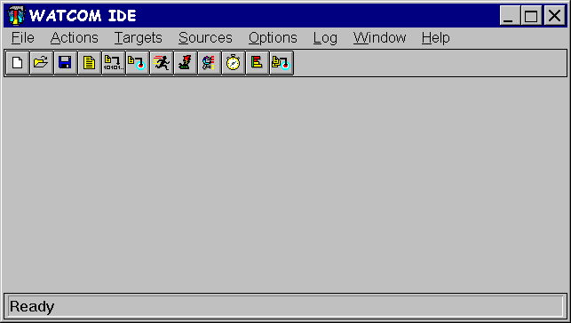
Figure 1. The initial IDE screen
Defining a Project
In this tutorial, you will be creating a new project called KITCHEN. Here are the steps required to accomplish
this task.
- Define a new project by pulling down the File menu and selecting the New Project... item. You
can also define a new project by clicking on the "Create a new project" icon on the toolbar.
- A choice of different sample project directories is available. Assuming that you installed the Open Watcom FORTRAN
77 software in the \WATCOM directory, you will find the sample project directories in the following directory:
\WATCOM\SAMPLES\IDE\FORTRAN
For purposes of this tutorial, we recommend that you select one of the following project directories:
- WIN
- for an example of 16-bit Windows 3.x application development when using Windows 3.x under DOS as a host development system,
WIN386
- for an example of 32-bit Windows 3.x application development when using Windows 3.x under DOS as a host development system,
WIN32
- for an example of 32-bit Win32 application development when using Windows NT/2000/XP or Windows 95/98/Me as a host development
system, and
OS2
- for an example of 32-bit OS/2 application development when using 32-bit OS/2 as a host development system.
Thus the target that we refer to below should be one of WIN, WIN386, WIN32, or OS2 depending
on your selection. The tutorial uses the WIN32 example for illustrative purposes. You will find some
minor variations from your selected target environment.
When asked for a project name, you can do one of two things:
- enter the following pathname:
d:[path]\SAMPLES\IDE\FORTRAN\target\KITCHEN
where d:[path] is the drive and path where you installed the Open Watcom software, or
- use the file browser to select the following directory:
d:[path]\SAMPLES\IDE\FORTRAN\target
and specify the filename kitchen.
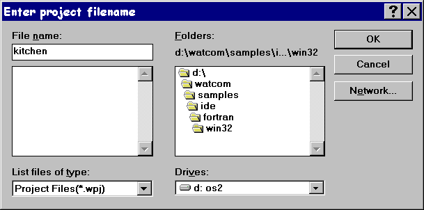
Figure 2. Creating a new project
Press the Enter key or click on OK (OPEN).
The project description will be stored in this file and the IDE will set the current working directory to the specified
path during your session.
- You will be prompted for a target name. Since we will be attaching pre-defined targets, just click the Browse
button when prompted for the target name. Select the "draw" target file (it will be one of draw16.tgt,
draw.tgt, draw32.tgt, drawos2.tgt depending on your selection of target).
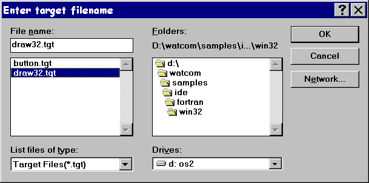
Figure 3. Attaching existing targets
Press the Enter key or click on OK (OPEN).
- You can ignore the settings displayed for Target Environment and Image Type since the target definition
already exists (we created it for you). The settings are important when you are defining a new target (i.e., one that
was not predefined).
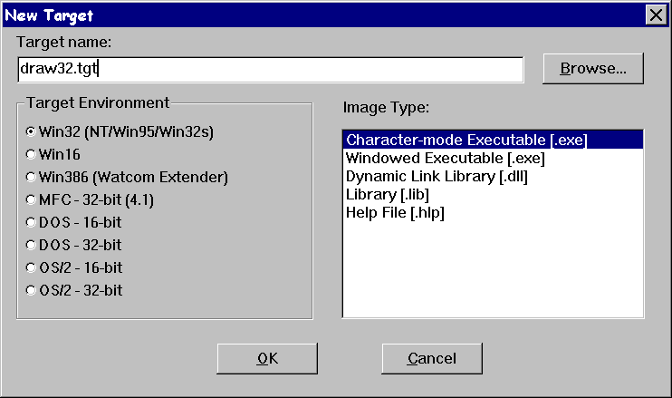
Figure 4. Selecting a target type
Press the Enter key or click on OK.
A target window is created in the project window for the "draw" target. This window contains all of the
files associated with the target. You can click on any of the "Folder" icons to hide or un-hide all files
with a particular extension. For example, you may wish to un-hide all the files with a .bmp extension by clicking
on the folder icon associated with bitmap files.
Adding Multiple Targets
Open Watcom's IDE allows you to have multiple targets in any particular project. Note that targets can be used by
multiple projects. To add a new target to the project, do the following.
- Pull down the Targets menu and select the New Target... item.
- Enter button.tgt as the target name for the new target to be added to the project. Do not forget to include
the .tgt extension. It is required when selecting a pre-existing target.
- You can ignore the settings displayed for Target Environment and Image Type since the target definition
already exists (we created it for you). The settings are important when you are defining a new target (i.e., one that
was not predefined).
- Press the Enter key or click on OK.
A target window is created in the project window for the button target.
Making a Target
Open Watcom's IDE will automatically generate the sequence of steps required to build or "make" each of the
targets in a project. Note that the targets in a project can be made individually or collectively. To make the
button.lib target, do the following.
- Click on the window of the target you wish to make. In this case, click on the button.lib target window.
- Pull down the Targets menu and select the Make item (you can also do this by clicking on the "Make
the current target" icon on the toolbar, or by right-clicking on the target and selecting the Make item from
the pop-up menu).
The IDE will now construct a makefile based on its knowledge of the target and construction rules, and then invoke the
make utility to create the target, in this case button.lib. The output of this procedure is displayed in the
Log window.
Making All Targets
Click the "Make all targets in the project" icon on the toolbar to make all of the targets in the current project.
If one target depends on another target, the latter target will be made first. In this tutorial button.lib
will be made first (there will be nothing to do since it was made previously) and then draw???.exe, since button.lib
is in the list of files associated with draw???.exe. In each case, the IDE constructs makefiles based on its
knowledge of the target and construction rules. The output of this procedure is displayed in the Log window.
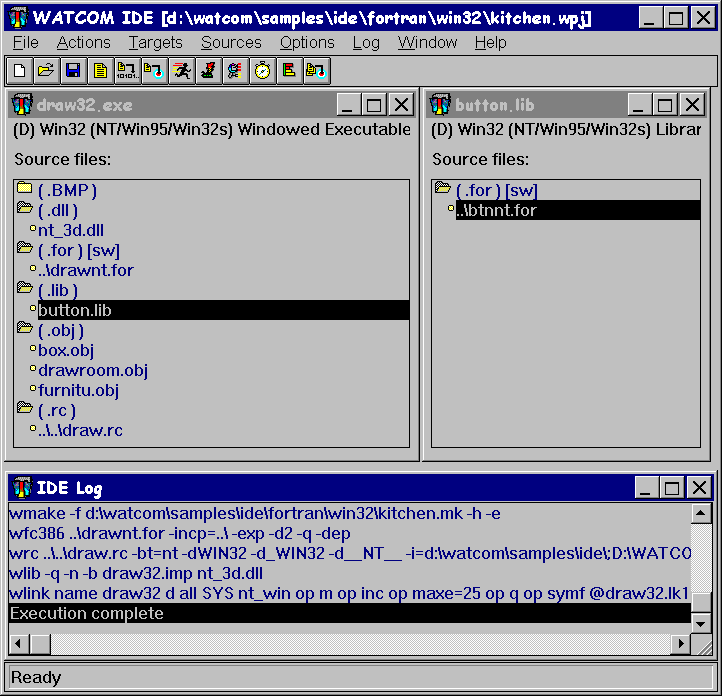
Figure 5. Making one or more targets
Executing the Program
The project should have built without errors, so now you are ready to execute the program you have developed.
Click on the draw???.exe target window and simply click on the "Run the current target" icon on
the toolbar. You can also do this by selecting Run from the Targets menu, or right-clicking anywhere
on the target window outside of the inner frame and selecting Run from the pop-up menu (right-clicking is context
sensitive and the pop-up menu that results will vary depending on the area of the window in which you right-click).
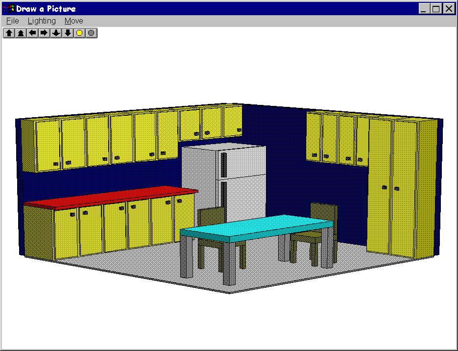
Figure 6. The kitchen demo
The demo you have created is a simple three dimensional drawing of a kitchen. By using either the icons on the
toolbar or the menus you can rotate the picture left, right, up, and down, make the picture brighter or dimmer, move the
picture closer or farther away, and increase or decrease the amount of contrast (this latter feature is found in the "Lighting"
menu). Choose Exit from the File menu to exit the demo program when you are finished.
Smart Editing
The IDE recognizes the type of file you wish to edit, and invokes the appropriate editor for the task. To edit a
file, you either double-click on it or select it and click the "Edit" icon on the toolbar. Files with a
.c, .cpp, .h, .hpp, .for, .asm or .rc extension are edited with a text editor; files with a .bmp, .ico,
or .cur extension are edited with the Image Editor; files with a .dlg or .res extension are edited
with the Resource Editor.
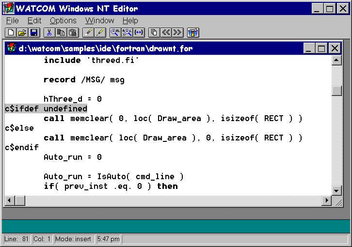
Figure 7. The Open Watcom Editor for Windows
Now we will edit one of the source files and introduce an error into the application.
- Double-click on the "draw" source file (i.e., draw???.for) to load the source file into the editor.
- Search for the line containing the text:
c$ifdef undefined
For Windows users, "Find" is in the "Edit" menu. If you are building a WIN386 application,
search for the second line containing this text (located in subroutine memclear).
- Now, to introduce an error into the application, add the line
c$define undefined
just before the line containing c$ifdef.
- Save your changes by clicking on the "Write the current file to disk" icon or select Save from the
File menu.
- Return to the IDE (by clicking on it if it is visible on your screen, or by using Alt-Tab), re-make your project, and
run it. A fault occurs in your application, so the next step is to track down the problem using the Open Watcom Debugger.
Debugging the Program
To debug a program it must first be compiled to include debugging information. The IDE maintains two sets of switches
for each target in a project. These are known as the Development Switches and the Release Switches.
- Right click on draw???.for and select Source options from the pop-up menu. Select Fortran Compiler
Switches from the sub-menu.
By default, your target is placed in development mode with the debugging switches for the compiler and linker set
to include debugging information. You can either set the switches in each category manually or you can copy the default
Release switches using the CopyRel button. This method of setting switches is especially convenient since you can specify
everything from diagnostic, optimization, and code generation switches to special linker switches all without having to memorize
a cryptic switch name - you simply click next to the switches you wish to use for a particular item.
- Scroll through the categories using the >> button until you get to:
4. Debugging Switches
We can see that full debugging information was used in the compile, so just click on Cancel to exit this screen.
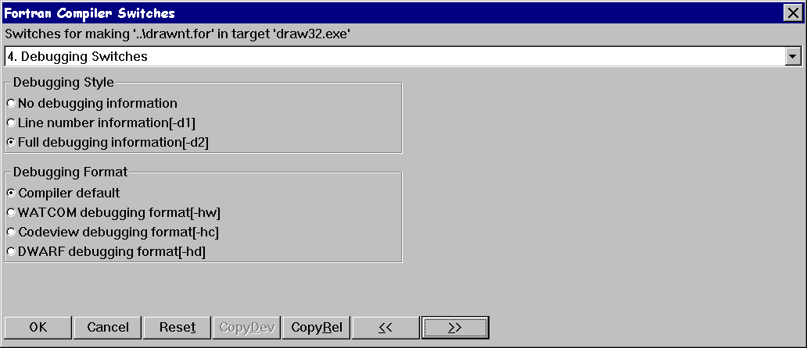
Figure 8. Setting compiler switches
- To invoke the debugger, pull down the Targets menu and choose the Debug item or select the "Debug the
current target" icon from the toolbar.
The Open Watcom Debugger is designed to be as convenient and intuitive as possible, while at the same time providing a
comprehensive and flexible environment for serious debugging. You can configure your environment to display exactly
the information you require to be most productive. Among the windows available are source and assembly, modules, functions,
calls, threads, images, watches, locals, globals, file variables, registers, 80x87 FPU, stack, I/O ports, memory display,
and a log window. You can step through your source using the keys or icons on the toolbar. Execute one line at
a time by stepping over calls or stepping into calls, or execute until the current function returns. Right-mouse button
functionality gives context-sensitive pop-up menus.
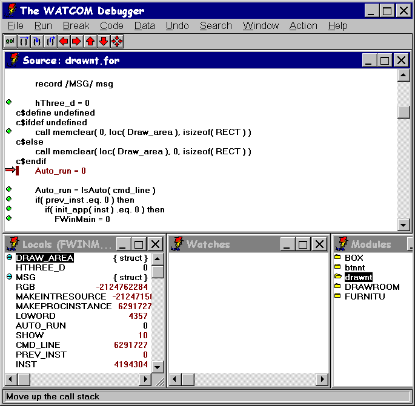
Figure 9. The Open Watcom Debugger
We know that a fault has occurred in draw???.exe, so we will run the application and examine the state of
the program when the fault occurs.
- Click on the "go!" icon on the toolbar to begin execution of the program. The exception occurs and the
source window shows the line
arr( cnt ) = ch
in the subroutine memclear as the last line executed before the exception. Examining the Locals window
you will see that the array location or address, locale, is 0. This means that the array arr was
mapped to location 0. For the 32-bit Windows example, we also needed to use the "array" pragma to force a
far pointer reference to cause the exception.
- We can now move up the call stack by clicking on the "Move up the call stack" icon on the toolbar (red up arrow)
to follow the program's execution. On the previous executable line of code, we see memclear is called from
the main program with three arguments.
call memclear( 0, loc(Draw_area), isizeof(RECTL) )
We see that memclear is called with 0 as the first argument and loc(Draw_area) as the second argument
which is backwards to the way it should be. An artificial error was introduced for the purposes of this tutorial.
- By removing the line
c$define undefined
we can undo this error. Exit the debugger.
- Double-click on draw???.for to load the source file into the editor.
- Go to the line in question using "find" or "search" and delete the line. Save your changes by
clicking on the "Write the current file to disk" icon or selecting Save from the File menu.
- Return to the IDE (by clicking on it if it is visible on your screen, or by using Alt-Tab) and re-make your project.
- Run your project to see the kitchen demo.
Correcting an Error
We are now going to introduce an error into the source code to illustrate another feature of the IDE.
- Double-click on draw???.for to load the source file into the editor.
- Search for the line containing the text:
c$ifdef undefined
For Windows users, "Find" is in the "Edit" menu.
- Now, to introduce a syntax error into the application, add the line
hThree_d + 0
just before the line containing c$ifdef.
- Save your changes by clicking on the "Write the current file to disk" icon or select Save from the
File menu.
- Return to the IDE (by clicking on it if it is visible on your screen, or by using Alt-Tab).
- Click the "Make all targets in the project" icon to re-make the project.
An error is encountered during the make and error message(s) appear in the log window. Additional information on
the error is available by selecting the error, pulling down the Log menu and selecting the Help on Message
item.
- Double-click on the error message
drawwin.for(83): *ERR* ST-17 column 9, undecodeable statement or
misspelled word HTHREE_D
The offending source file ( draw???.for) is loaded into the Editor and the cursor is positioned at the line
which caused the error.
- Delete the line to correct the error.
- Save your changes.
- Return to the IDE and re-make the project.
Editing a Bitmap
You can edit bitmaps, icons, or cursors associated with your project using Open Watcom's Image Editor. Double-click
on a file with a .bmp, .ico, or .cur extension and the file is loaded into the Image Editor. The
editor has many features to design your images, including resizing, rotation, shifting, and a utility to take a "snapshot"
of another image and import it.
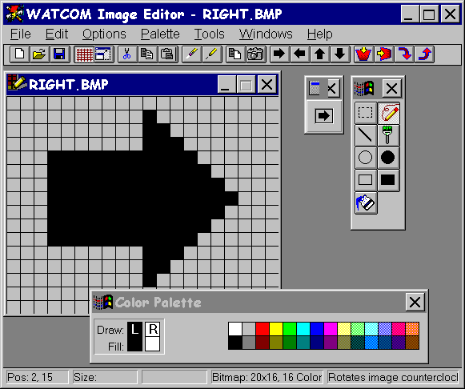
Figure 10. The Open Watcom Image Editor
Suppose you wanted to change the color of the right-arrow icon in your application.
- If the "Folder" icon next to .bmp is closed, click on it to restore all the files with a .bmp
extension to the file list.
- Scroll the window until the file right.bmp is visible.
- Double-click on right.bmp in the draw???.exe target window.
- Select the "Paint Can" icon from the Tool Palette.
- Select a color from the Color Palette.
- Click on the arrow.
- Save your changes using the "Save" icon on the toolbar and exit the Image Editor.
- Click the "Make all targets in the project" icon to rebuild the project with the change incorporated.
Next, you will add source files to the list of items that make up draw???.exe.
- Pull down the Sources menu and select the New Source... item.
- Note:
- You can do this either by choosing from the menu bar or by positioning the mouse over the file list area and clicking the
right mouse button. The IDE displays a pop-up menu from which you can choose the desired action.
- Enter the filename draw.res (or drawos2.res for OS/2). For OS/2, click OK when you have entered
the source file name. For all other systems, click on Add when you have entered the source file name and then click
on Close. Now we will remove the .rc file from the project so that our changes to the .res file will
not be overwritten. When an .rc file is present, the .res file is generated from the .rc
file.
- Right click on draw.rc (or drawos2.rc for OS/2), then select Remove Source from the pop-up menu.
- Double-click on draw.res (or drawos2.res). The Resource Editor is invoked, displaying all the
available resources (in this case, icons, bitmaps, and menus).
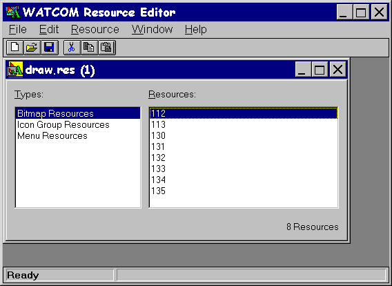
Figure 11. The Open Watcom Resource Editor
- Click on "Menu Resources".
- Double-click on "DrawMenu" in the right-hand box. This will bring up the Menu Editor. The Menu Editor
displays the menus defined for the resource DrawMenu. You can specify pop-up menus, menu items and sub-items,
text, separators, attributes, break styles, and memory flags.
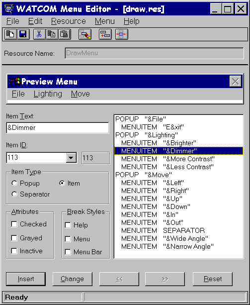
Figure 12. The Open Watcom Menu Editor
- Click on MENUITEM "&Dimmer" in the item list window.
- In the "Item Text" window change the item to &Darker and then click on the "Change" button.
- Select Update from the File menu or click on the "Update the file with this menu" icon.
- Exit the Menu Editor.
- Now, select Save from the File menu or click on the "Save this file" icon and exit the Resource
Editor.
- Click the "Make all targets in the project" icon to re-make the project.
Sampling and Profiling an Executable
Together, the Open Watcom Execution Sampler and the Open Watcom Execution Profiler allow you to pinpoint the areas of
your code that are the most heavily used, indicating possible candidates for performance improvements.
- Click on the draw???.exe target.
- Select the Sample item from the Targets menu item, or click on the "Run and sample the current target"
icon from the toolbar. The Open Watcom Execution Sampler is invoked and your application begins to execute.
- Try rotating and resizing the image a few times. The sampler takes a "snapshot" of the code that is being
executed at regular intervals. Exit the application. A samples file with extension .smp is created in
the current directory. This file is input for the profiler.
- You are now ready to profile the executable. Do this by selecting Profile from the Targets menu, or
by clicking on the "Profile the current target" icon on the toolbar. The profiler scans the .smp
file and reports the activity in the various modules of the application. The percentage of time spent in the modules
is indicated as an absolute percentage (percent of total samples) and as a relative percentage (percent of samples in the
.exe image).
- Double-click on the module or routine names to step down to the exact source being executed when a sample was taken.
For more details, you can adjust the sampling rate of the Sampler to get a better picture of your code. To do this,
exit the Profiler, pull down the Targets menu, and select Target options, then Sample Switches...
from the pop-up menus. Specify a sampling rate such as 2 (for 2 milliseconds), click on OK, then run the Sampler and
Profiler again.
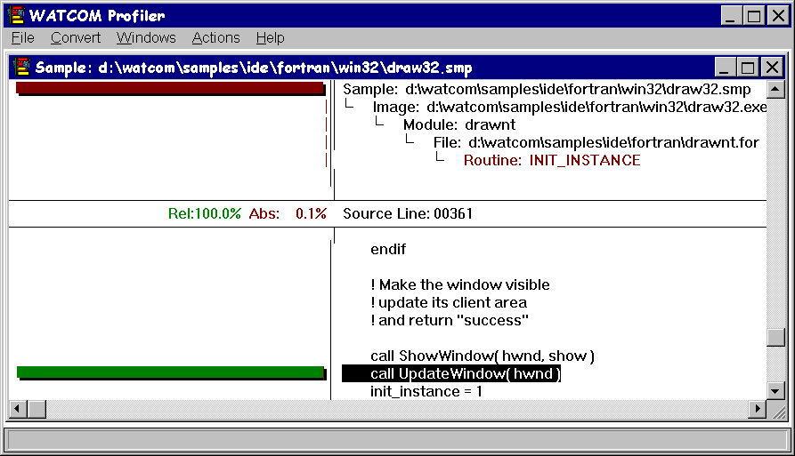
Figure 13. The Open Watcom Execution Profiler
Saving the Project and Terminating the Session
You can now exit the IDE session by selecting Exit from the File menu. If you have not already saved
your project, you will be prompted to do so. Choose "Yes" and the session ends.
Tutorial Review
In this tutorial, you created a project called kitchen.wpj, which was composed of two targets: draw???.exe
and button.lib. You compiled and linked it into an executable program using the WMAKE utility, the Open Watcom
FORTRAN 77 compiler, and the Open Watcom Linker. You executed it both directly and under the control of the Open Watcom
Debugger.. You browsed the source, and made changes using the text and resource editors. Finally, you sampled
and profiled the application.
When you saved the project, you created the following permanent files:
- kitchen.wpj - describes the screen layout and refers to the target files called draw???.tgt and
button.tgt.
- draw???.tgt - describes the target executable draw???.exe and all switches required to link it.
It also describes the .for files and switches required to compile them.
- button.tgt - describes the target library and all switches required to create it. It also describes the
.for file and the switches used to build the library.
Documentation
The following manuals comprise the Open Watcom FORTRAN 77 documentation set. When you install the software, the
Open Watcom FORTRAN 77 documentation set is provided as on-line help files. Subsequent sections describe how to access
this on-line help.
The following describes the titles in the Open Watcom FORTRAN 77 documentation set.
- Open Watcom FORTRAN 77 User's Guide
- This manual describes how to use Open Watcom FORTRAN 77. It contains an introduction to the compiler and a tutorial
section. It also describes compiler options, include file processing, libraries, memory models, calling conventions,
pragmas, in-line assembly, and environment variables.
Open Watcom FORTRAN 77 Tools User's Guide
- This manual describes the command line oriented tools including the compile and link utility, library manager, object file
disassembler, far call optimization tool, assembler, patch utility, strip utility, make utility, and touch utility.
Open Watcom Graphical Tools User's Guide
- This manual describes Open Watcom's Windows and OS/2 graphical tools including the Integrated Development Environment, Browser,
Dr. Watcom, Spy, DDE Spy, Image Editor, Resource Editor, Sampler/Profiler, Resource Compiler, Heap Walker, Zoom, and
Editor.
Open Watcom FORTRAN 77 Programmer's Guide
- This manual includes 5 major sections each of which describes operating system specific development issues. The operating
systems covered include extended DOS, OS/2, Windows 3.x, Windows NT/2000/XP, Windows 95/98/Me, 32-bit Windows 3.x (using
Open Watcom's Supervisor technology) and Novell NLMs. Topics include creating a sample program, operating system specific
error messages, and debugging techniques.
Open Watcom FORTRAN 77 Language Reference
- This manual describes the ANSI FORTRAN 77 programming language and extensions which are supported by Open Watcom FORTRAN 77.
Open Watcom FORTRAN 77 Graphics Library Reference
- This manual describes the graphics libraries supported by Open Watcom FORTRAN 77. The graphics functions are used to
display graphical images such as lines and circles upon the screen. Functions are also provided for displaying text.
Open Watcom Debugger User's Guide
- This manual describes the Open Watcom Debugger and discusses advanced debugging techniques.
Open Watcom Linker User's Guide
- This manual describes how to use the Open Watcom Linker to generate executables for target systems such as extended DOS, Windows
3.x, Windows 95/98/Me, Windows NT/2000/XP, OS/2, and Novell NLMs.
Accessing On-line Documentation
The following sections describe how to access the on-line help that is available for DOS, Windows and OS/2.
On-line Documentation under DOS
The Open Watcom Help program, WHELP , may be used under DOS to access on-line documentation. The Open
Watcom Help command line syntax is:
WHELP help_file [topic_name]
Notes:
- If help_file is specified without an extension then ".IHP" is assumed.
- The topic_name parameter is optional.
- If topic_name is not specified, the default topic is "Table of Contents".
- If topic_name contains spaces then it must be enclosed in quotes.
The following help files are available:
- CLIB
- Open Watcom C Library Reference
FMIX
- Open Watcom FORTRAN 77 Master Index
FPGUIDE
- Open Watcom FORTRAN 77 Programmer's Guide
FTOOLS
- Open Watcom FORTRAN 77 Tools User's Guide
FUGUIDE
- Open Watcom FORTRAN 77 User's Guide (excludes Diagnostic Messages appendix which is available as a separate
help file)
F77LR
- Open Watcom FORTRAN 77 Language Reference
F77GRAPH
- Open Watcom FORTRAN 77 Graphics Library Reference
LGUIDE
- Open Watcom Linker User's Guide
F_README
- Open Watcom FORTRAN 77 Getting Started manual
RESCOMP
- Documentation for the Open Watcom Resource Compiler (excerpt from the Open Watcom Graphical Tools User's Guide)
WD
- Open Watcom Debugger User's Guide
WPROF
- Documentation for the Open Watcom Execution Sampler and Open Watcom Execution Profiler (excerpt from the Open Watcom
Graphical Tools User's Guide)
WFCERRS
- Documentation for the Open Watcom F77 Diagnostic Messages (excerpt from the Open Watcom FORTRAN 77 User's Guide).
On-line Documentation under Windows
On-line documentation is presented in the form of Windows Help files (".HLP" files). When the software
is installed under Windows 3.x, Windows 95/98/Me or Windows NT/2000/XP, a number of program groups are created. You
can access the on-line document by opening a program group and double-clicking on a help icon.
- Open Watcom FORTRAN 77 Group
-
Getting Started
- Open Watcom FORTRAN 77 Getting Started
- Open Watcom FORTRAN 77 Tools Help Group
-
Accelerator Editor Help
- Documentation for the Accelerator Editor (excerpt from the Open Watcom Graphical Tools User's Guide)
C Library Reference
- Open Watcom C Library Reference
DDE Spy Help
- Documentation for the DDE Spy utility (excerpt from the Open Watcom Graphical Tools User's Guide)
Debugger Help
- Open Watcom Debugger User's Guide
Dialog Editor Help
- Documentation for the Dialogue Editor (excerpt from the Open Watcom Graphical Tools User's Guide)
Dr. Watcom Help
- Documentation for Dr. Watcom (excerpt from the Open Watcom Graphical Tools User's Guide)
Editor Help
- Documentation for the Open Watcom Editor (excerpt from the Open Watcom Graphical Tools User's Guide)
FORTRAN 77 Error Messages
- Documentation for the Open Watcom F77 Diagnostic Messages (excerpt from the Open Watcom FORTRAN 77 User's Guide)
FORTRAN 77 Master Index
- The master index for all of the Open Watcom FORTRAN 77 on-line help
Heap Walker Help
- Documentation for the Heap Walker utility (excerpt from the Open Watcom Graphical Tools User's Guide)
IDE Help
- Documentation for the Interactive Development Environment (excerpt from the Open Watcom Graphical Tools User's Guide)
Image Editor Help
- Documentation for the Image Editor (excerpt from the Open Watcom Graphical Tools User's Guide)
Linker Guide
- Open Watcom Linker User's Guide
Menu Editor Help
- Documentation for the Menu Editor (excerpt from the Open Watcom Graphical Tools User's Guide)
Profiler Help
- Documentation for the Open Watcom Execution Sampler and Open Watcom Execution Profiler (excerpt from the Open Watcom
Graphical Tools User's Guide)
Programmer's Guide
- Open Watcom FORTRAN 77 Programmer's Guide
Resource Compiler Help
- Documentation for the Resource Compiler (excerpt from the Open Watcom Graphical Tools User's Guide)
Resource Editor Help
- Documentation for the Resource Editor (excerpt from the Open Watcom Graphical Tools User's Guide)
Spy Help
- Documentation for the Spy utility (excerpt from the Open Watcom Graphical Tools User's Guide)
String Editor Help
- Documentation for the String Editor (excerpt from the Open Watcom Graphical Tools User's Guide)
Tools Guide
- Open Watcom FORTRAN 77 Tools User's Guide
User's Guide
- Open Watcom FORTRAN 77 User's Guide
Zoom Help
- Documentation for the Zoom utility (excerpt from the Open Watcom Graphical Tools User's Guide)
On-line Documentation under OS/2
On-line documentation is presented in the form of OS/2 Information files (".INF" files). When the software
is installed under OS/2, the Open Watcom FORTRAN 77 folder is created. You can access the on-line document by opening
the Open Watcom FORTRAN 77 folder and double-clicking on a help icon.
- C Library Reference
- Open Watcom C Library Reference
Debugger Help
- Open Watcom Debugger User's Guide
FORTRAN 77 Error Messages
- Documentation for the Open Watcom F77 Diagnostic Messages (excerpt from the Open Watcom FORTRAN 77 User's Guide)
FORTRAN 77 Master Index
- The master index for all of the Open Watcom FORTRAN 77 on-line help
Getting Started
- Open Watcom FORTRAN 77 Getting Started
IDE Help
- Documentation for the Interactive Development Environment (excerpt from the Open Watcom Graphical Tools User's Guide)
Profiler Help
- Documentation for the Open Watcom Execution Sampler and Open Watcom Execution Profiler (excerpt from the Open Watcom
Graphical Tools User's Guide)
Programmer's Guide
- Open Watcom FORTRAN 77 Programmer's Guide
Tools Guide
- Open Watcom FORTRAN 77 Tools User's Guide
User's Guide
- Open Watcom FORTRAN 77 User's Guide
Release Notes for Open Watcom FORTRAN 77 1.9
There are a number of enhancements and changes in this new version of Open Watcom FORTRAN 77. The following sections
outline most of the major changes. You should consult the User's Guide for full details on these and other changes
made to the compiler and related tools. You should check the next section to determine if you need to recompile your
application.
Changes in 11.0 that may Require Recompilation
Do not attempt to mix object code generated by earlier versions of the compilers with object code generated by this release
or with the libraries provided in this release.
- clock()
- The clock function accuracy has changed from 100 ticks per second to 1000 ticks per second (i.e., CLOCKS_PER_SEC
has changed). Source code that uses the clock function and CLOCKS_PER_SEC in its calculations
must be recompiled before linking the application with new libraries.
Major Differences from Version 10.6
The following sections summarize the major differences from the previous release of Watcom FORTRAN 77.
- Some of the Win32 and 32-bit OS/2 versions of our tools are now available in DLL form.
EXE DLL Description
------ ------- -----------------------
wlink wlink Open Watcom Linker
wlib wlibd Open Watcom Library Manager
This provides better performance when using the Integrated Development Environment or Open Watcom Make. See
the description of the !loaddll preprocessing directive in Open Watcom Make for more information.
Changes to the Code Generator for 11.0
- A new optimization, "branch prediction", has been added. This optimization is enabled by the "OBP"
or "OX" compiler options. The code generator tries to increase the density of cache use by predicting branches
based upon heuristics (this optimization is especially important for Intel's Pentium Pro).
- We have added Multi-media Extensions (MMX) support to the in-line assembler.
- The Open Watcom Linker supports incremental linking.
- The Open Watcom Linker can now process COFF and ELF format object files, as well as OMF et al. The Open Watcom Linker
can now read both AR-format (Microsoft compatible) libraries and old-style OMF libraries.
- Support for creating 16-bit DOS overlaid executables has been removed from the linker.
- The Open Watcom Library Manager (WLIB) can now process COFF and ELF format object files, as well as OMF et al. The
Open Watcom Library Manager can now read/write both AR-format (Microsoft compatible) libraries and old-style OMF libraries.
The default output format is AR-format and this can be changed by switches. The Open Watcom Library Manager can
output various format import libraries.
- We have added Multi-media Extensions (MMX) support to the Open Watcom Assembler (WASM).
- A new version of the Open Watcom Disassembler (WDIS) is included. It can process ELF, COFF or OMF object files and
ELF, COFF or PE format (Win32) executables.
The old disassembler (WDISASM) has been retired and is not included in the package.
- We have added new tool front-ends that emulate Microsoft tools. These are:
These programs take the usual Microsoft arguments and translate them, where possible, into equivalent Open Watcom arguments
and spawn the equivalent Open Watcom tools.
- Open Watcom Make now processes Microsoft format makefiles when the "ms" option is used.
Changes to the C/C++ Libraries for 11.0
- We have added multi-byte and wide character (including UNICODE) support to the libraries.
- We have added Multi-media Extensions (MMX) support to the libraries.
- The clock function accuracy has changed from 100 ticks per second to 1000 ticks per second (i.e.,
CLOCKS_PER_SEC has changed).
Changes to the DOS Graphics Library for 11.0
- The graphics library now performs the VESA test before testing for vendor specific graphics cards. This fix
is intended to broaden the number of graphics cards that are supported.
Changes in Microsoft Win32 SDK Support for 11.0
- The Win32 SDK is included for Windows 95 and Windows NT platforms.
Changes in 10.6 that may Require Recompilation
- _diskfree_t
- The struct members of the _diskfree_t structure has been changed from UNSIGNED SHORTs to UNSIGNED INTs. This is to deal
with possible HPFS partitions whose size will overflow a short, as well as Microsoft compatibility.
clock()
- The clock function accuracy has changed from 100 ticks per second to 1000 ticks per second (i.e., CLOCKS_PER_SEC
has changed). Source code that uses the clock function and CLOCKS_PER_SEC in its calculations
must be recompiled before linking the application with new libraries.
Major Differences from Version 10.5
The following sections summarize the major differences from the previous release of Watcom FORTRAN 77.
We have included Windows 95 format help files.
Changes to the C Library
The following new functions were added to the library.
- _getw
- read int from stream file
_putw
- write int to stream file
The clock function accuracy has changed from 100 ticks per second to 1000 ticks per second (i.e.,
CLOCKS_PER_SEC has changed).
Changes to the Image Editor
- Support has been added for > 16 colors for bitmaps.
- Support has been added for 16 X 16 icons.
- Support has been added for 48 X 48 icons.
Changes to the Dialog Editor
- Support has been added for Windows 95 controls.
- Support has been added for adding new control styles to existing controls.
- Support has been added for new dialog styles.
- Support has been added for allowing help IDs to be specified in dialog and control statements.
- Support has been added for generating new resource statements in .RC files.
Changes to the Resource Editor
- Support has been added for new Windows 95 resource types.
- Support has been added for generating new resource statements in .RC files.
Changes to the Resource Compiler
- Support has been added for extended styles for dialogs.
- Support has been added for the RCINCLUDE keyword.
Major Differences from Version 9.5
- The functionality of Open Watcom FORTRAN 77/16 and Open Watcom FORTRAN 77/32 is included in a single package.
- OS/2 3.0 Warp is supported.
- Windows NT 3.5 is supported.
- Windows 95 (Chicago) is supported.
- An Integrated Development Environment for Windows 3.x, Windows 95, Windows NT and OS/2 PM is included.
- New, redesigned debugger with GUI interfaces for Windows 3.x, Windows 95, Windows NT and OS/2 PM is included.
- TCP/IP remote debug servers for OS/2 and Windows NT are included.
- The optimizer has been enhanced.
- New, redesigned user interface for the Profiler.
- Windows resource editing tools are included:
- Dialog Editor
-
Bitmap Editor
-
Resource Editor
-
Menu Editor
-
String Editor
-
Accelerator Editor
-
- Windows development tools are included:
- Dr. Watcom (a post mortem debug utility)
-
Spy (Windows message spy program)
-
DDESpy
-
Heap Walker
-
Zoom
-
- On-line documentation is included.
- Creation of FlashTek DOS extender applications is supported.
- Compiler executables have been created that run under all supported operating systems. They are located in the BINW
directory.
Items No Longer Supported
- Debugging of Ergo OS/386 DOS extender applications
- DESQView remote debugging
Changes that may Require Recompilation
FORTRAN applications should not require recompilation, but you should recompile your application if you want to take
full advantage new features in the debugger.
Major Differences from Version 9.0
The following lists some of the new features/differences between version 9.5 and 9.0.
- The "/resource" option has been added and allows run-time messages to be placed in the executable file as resource
information instead of being linked with the application. The resource file containing these messages is called "wf77.res"
and is locating in the root of the directory in which you installed the software. The strip utility (WSTRIP) can be
used to place the resource information in the executable file. Special libraries for processing resource information
will be required when you link your application. These libraries are called "wresf.lib" (for 32-bit register
calling convention), "wresfs.lib" (for 32-bit stack calling convention), "wresm.lib" (for 16-bit medium
memory model), and "wresl.lib" (for 16-bit large and huge memory models) and are located in the "lib386"
and "lib286" directories of the directory in which you installed the software.
- The "/5" option has been added and causes the compiler to generate code that is optimized for the Pentium.
This is the default. The "/fp5" option has been added and causes the compiler to generate floating-point
code that is optimized for the Pentium. This is not the default. The default floating-point option is "/fp3".
- The "/3" option has been added and causes the compiler to generate code optimized for a 80386 processor.
The "/4" option has been added and causes the compiler to generate code optimized for a 80486 processor.
The "/5" option has been added and causes the compiler to generate code that is optimized for the Pentium.
In addition, the "/fp5" option has been added and causes the compiler to generate floating-point code that is optimized
for the Pentium.
- The "/descriptor" option has been added which specifies that string descriptors are to be passed for character
arguments. You can specify the "/nodescriptor" option if you do not want string descriptors to be passed
for character arguments. Instead, the pointer to the actual character data and the length will be passed as two arguments.
The arguments for the length will be passed as additional arguments following the normal argument list. For character
functions, the pointer to the data and the length of the character function will be passed as the first two arguments.
- The "oi" option has been added. This option causes code for statement functions to be generated in-line.
- The floating-point model used when generating in-line 80x87 instructions has changed. If you wish to call subprograms
compiled with version 9.0 you must specify the "/fpr" option.
- Support for records in text files separated by only a line feed character has been added. Previously, records in
text files had to be separated by a carriage return/line feed sequence.
- The "/debug" option has been divided into two separate options. The "/bounds" option generates
array and character subscript checking code. The "/trace" option generates code that allows a run-time traceback
to be generated when a error is issued.
- The "/quiet" option has been added to suppress banner/summary information. The "terminal" option
only affects the display of diagnostic messages (extensions, warnings and errors). For example, compiling with the
"/quiet" option will only display diagnostic messages (if any).
- The "/cc" option has been added. It specifies that unit 6 is a carriage control device and that output
to this unit will be assumed to contain carriage control characters. Note that a blank carriage control character will
automatically be generated for list-directed output.
- The "/automatic" option causes all local variables (including arrays) to be allocated on the stack. Care
should be taken when using this option since the stack requirements of your application may increase dramatically.
- The "/wild" option has been added. It suppresses the compile-time checking that normally causes an error
to be issued when an attempt is made to transfer control into a block structure from outside the block structure and vice
versa. This option is only to be used when compiling existing code that contains GOTO statements of this type; it does
not encourage this style of programming.
- National language support has been added. The "/japanese" option causes the compiler to process Japanese
double-byte characters in variable names and character data. Similarly, the "/chinese" option will process
Traditional Chinese characters and the "/korean" will process Korean characters.
- The "/ob" option has been added. This allows the code generator to use register ESP as a base register
to reference local variables and subprogram arguments. Note that when this option is specified, the compiler will abort
when there is not enough memory to optimize the subprogram. By default, the code generator uses more memory-efficient
algorithms when a low-on-memory condition is detected.
- The GROWHANDLES() function has be added. This function increases the number of files that can be opened by a program
to the specified amount. The value returned is the new maximum. This may be less than the requested amount because
of operating system limitations.
- The IARGC() and IGETARG() functions have been added. IARGC is an integer function that returns the argument count.
IGETARG is an integer function that takes two arguments. The first argument is of type INTEGER and is the index
of the argument to be returned. The second argument is of type CHARACTER and is used to return the argument.
The value returned by the function is the length of the argument.
- The SHARE= specifier has been added to the OPEN statement. It allows the program to specify how other processes
can access a file that is opened by the original process. Possible values for the SHARE= specifier are as follows.
DENYRW - deny read and write access
DENYWR - deny write access
DENYRD - deny read access
DENYNO - allow read and write access
COMPAT - compatibility mode
Sybase Open Watcom Public License
USE OF THE SYBASE OPEN WATCOM SOFTWARE DESCRIBED BELOW ("SOFTWARE") IS SUBJECT TO THE TERMS AND CONDITIONS
SET FORTH IN THE SYBASE OPEN WATCOM PUBLIC LICENSE SET FORTH BELOW ("LICENSE"). YOU MAY NOT USE THE SOFTWARE
IN ANY MANNER UNLESS YOU ACCEPT THE TERMS AND CONDITIONS OF THE LICENSE. YOU INDICATE YOUR ACCEPTANCE BY IN ANY MANNER
USING (INCLUDING WITHOUT LIMITATION BY REPRODUCING, MODIFYING OR DISTRIBUTING) THE SOFTWARE. IF YOU DO NOT ACCEPT ALL
OF THE TERMS AND CONDITIONS OF THE LICENSE, DO NOT USE THE SOFTWARE IN ANY MANNER.
Sybase Open Watcom Public License version 1.0
1. General; Definitions. This License applies only to the following software programs: the open
source versions of Sybase's Watcom C/C++ and Fortran compiler products ("Software"), which are modified versions
of, with significant changes from, the last versions made commercially available by Sybase. As used in this License:
1.1 "Applicable Patent Rights" mean: (a) in the case where Sybase is the grantor of rights, (i) claims
of patents that are now or hereafter acquired, owned by or assigned to Sybase and (ii) that cover subject matter contained
in the Original Code, but only to the extent necessary to use, reproduce and/or distribute the Original Code without infringement;
and (b) in the case where You are the grantor of rights, (i) claims of patents that are now or hereafter acquired, owned
by or assigned to You and (ii) that cover subject matter in Your Modifications, taken alone or in combination with Original
Code.
1.2 "Contributor" means any person or entity that creates or contributes to the creation of Modifications.
1.3 "Covered Code" means the Original Code, Modifications, the combination of Original Code and any Modifications,
and/or any respective portions thereof.
1.4 "Deploy" means to use, sublicense or distribute Covered Code other than for Your internal research and
development (R&D) and/or Personal Use, and includes without limitation, any and all internal use or distribution of Covered
Code within Your business or organization except for R&D use and/or Personal Use, as well as direct or indirect sublicensing
or distribution of Covered Code by You to any third party in any form or manner.
1.5 "Larger Work" means a work which combines Covered Code or portions thereof with code not governed by
the terms of this License.
1.6 "Modifications" mean any addition to, deletion from, and/or change to, the substance and/or structure
of the Original Code, any previous Modifications, the combination of Original Code and any previous Modifications, and/or
any respective portions thereof. When code is released as a series of files, a Modification is: (a) any addition
to or deletion from the contents of a file containing Covered Code; and/or (b) any new file or other representation of computer
program statements that contains any part of Covered Code.
1.7 "Original Code" means (a) the Source Code of a program or other work as originally made available by
Sybase under this License, including the Source Code of any updates or upgrades to such programs or works made available
by Sybase under this License, and that has been expressly identified by Sybase as such in the header file(s) of such work;
and (b) the object code compiled from such Source Code and originally made available by Sybase under this License.
1.8 "Personal Use" means use of Covered Code by an individual solely for his or her personal, private and
non-commercial purposes. An individual's use of Covered Code in his or her capacity as an officer, employee, member,
independent contractor or agent of a corporation, business or organization (commercial or non-commercial) does not qualify
as Personal Use.
1.9 "Source Code" means the human readable form of a program or other work that is suitable for making modifications
to it, including all modules it contains, plus any associated interface definition files, scripts used to control compilation
and installation of an executable (object code).
1.10 "You" or "Your" means an individual or a legal entity exercising rights under this License.
For legal entities, "You" or "Your" includes any entity which controls, is controlled by, or is
under common control with, You, where "control" means (a) the power, direct or indirect, to cause the direction
or management of such entity, whether by contract or otherwise, or (b) ownership of fifty percent (50%) or more of the outstanding
shares or beneficial ownership of such entity.
2. Permitted Uses; Conditions & Restrictions.Subject to the terms and conditions of this License, Sybase
hereby grants You, effective on the date You accept this License and download the Original Code, a world-wide, royalty-free,
non-exclusive license, to the extent of Sybase's Applicable Patent Rights and copyrights covering the Original Code, to do
the following:
2.1 You may use, reproduce, display, perform, modify and distribute Original Code, with or without Modifications,
solely for Your internal research and development and/or Personal Use, provided that in each instance:
(a) You must retain and reproduce in all copies of Original Code the copyright and other proprietary notices and disclaimers
of Sybase as they appear in the Original Code, and keep intact all notices in the Original Code that refer to this License;
and
(b) You must retain and reproduce a copy of this License with every copy of Source Code of Covered Code and documentation
You distribute, and You may not offer or impose any terms on such Source Code that alter or restrict this License or the
recipients' rights hereunder, except as permitted under Section 6.
(c) Whenever reasonably feasible you should include the copy of this License in a click-wrap format, which requires
affirmative acceptance by clicking on an "I accept" button or similar mechanism. If a click-wrap format is
not included, you must include a statement that any use (including without limitation reproduction, modification or distribution)
of the Software, and any other affirmative act that you define, constitutes acceptance of the License, and instructing the
user not to use the Covered Code in any manner if the user does not accept all of the terms and conditions of the License.
2.2 You may use, reproduce, display, perform, modify and Deploy Covered Code, provided that in each instance:
(a) You must satisfy all the conditions of Section 2.1 with respect to the Source Code of the Covered Code;
(b) You must duplicate, to the extent it does not already exist, the notice in Exhibit A in each file of the Source
Code of all Your Modifications, and cause the modified files to carry prominent notices stating that You changed the files
and the date of any change;
(c) You must make Source Code of all Your Deployed Modifications publicly available under the terms of this License,
including the license grants set forth in Section 3 below, for as long as you Deploy the Covered Code or twelve (12) months
from the date of initial Deployment, whichever is longer. You should preferably distribute the Source Code of Your
Deployed Modifications electronically (e.g. download from a web site);
(d) if You Deploy Covered Code in object code, executable form only, You must include a prominent notice, in the code
itself as well as in related documentation, stating that Source Code of the Covered Code is available under the terms of
this License with information on how and where to obtain such Source Code; and
(e) the object code form of the Covered Code may be distributed under Your own license agreement, provided that such
license agreement contains terms no less protective of Sybase and each Contributor than the terms of this License, and stating
that any provisions which differ from this License are offered by You alone and not by any other party.
2.3 You expressly acknowledge and agree that although Sybase and each Contributor grants the licenses to their respective
portions of the Covered Code set forth herein, no assurances are provided by Sybase or any Contributor that the Covered Code
does not infringe the patent or other intellectual property rights of any other entity. Sybase and each Contributor
disclaim any liability to You for claims brought by any other entity based on infringement of intellectual property rights
or otherwise. As a condition to exercising the rights and licenses granted hereunder, You hereby assume sole responsibility
to secure any other intellectual property rights needed, if any. For example, if a third party patent license is required
to allow You to distribute the Covered Code, it is Your responsibility to acquire that license before distributing the Covered
Code.
3. Your Grants. In consideration of, and as a condition to, the licenses granted to You under this License,
You hereby grant to Sybase and all third parties a non-exclusive, royalty-free license, under Your Applicable Patent Rights
and other intellectual property rights (other than patent) owned or controlled by You, to use, reproduce, display, perform,
modify, distribute and Deploy Your Modifications of the same scope and extent as Sybase's licenses under Sections 2.1 and
2.2.
4. Larger Works. You may create a Larger Work by combining Covered Code with other code not governed by
the terms of this License and distribute the Larger Work as a single product. In each such instance, You must make
sure the requirements of this License are fulfilled for the Covered Code or any portion thereof.
5. Limitations on Patent License. Except as expressly stated in Section 2, no other patent rights, express
or implied, are granted by Sybase herein. Modifications and/or Larger Works may require additional patent licenses
from Sybase which Sybase may grant in its sole discretion.
6. Additional Terms. You may choose to offer, and to charge a fee for, warranty, support, indemnity or
liability obligations and/or other rights consistent with this License ("Additional Terms") to one or more recipients
of Covered Code. However, You may do so only on Your own behalf and as Your sole responsibility, and not on behalf
of Sybase or any Contributor. You must obtain the recipient's agreement that any such Additional Terms are offered
by You alone, and You hereby agree to indemnify, defend and hold Sybase and every Contributor harmless for any liability
incurred by or claims asserted against Sybase or such Contributor by reason of any such Additional Terms.
7. Versions of the License. Sybase may publish revised and/or new versions of this License from time to
time. Each version will be given a distinguishing version number. Once Original Code has been published under
a particular version of this License, You may continue to use it under the terms of that version. You may also choose
to use such Original Code under the terms of any subsequent version of this License published by Sybase. No one other
than Sybase has the right to modify the terms applicable to Covered Code created under this License.
8. NO WARRANTY OR SUPPORT. The Covered Code may contain in whole or in part pre-release, untested, or
not fully tested works. The Covered Code may contain errors that could cause failures or loss of data, and may be incomplete
or contain inaccuracies. You expressly acknowledge and agree that use of the Covered Code, or any portion thereof,
is at Your sole and entire risk. THE COVERED CODE IS PROVIDED "AS IS" AND WITHOUT WARRANTY, UPGRADES OR SUPPORT
OF ANY KIND AND SYBASE AND SYBASE'S LICENSOR(S) (COLLECTIVELY REFERRED TO AS "SYBASE" FOR THE PURPOSES OF SECTIONS
8 AND 9) AND ALL CONTRIBUTORS EXPRESSLY DISCLAIM ALL WARRANTIES AND/OR CONDITIONS, EXPRESS OR IMPLIED, INCLUDING, BUT NOT
LIMITED TO, THE IMPLIED WARRANTIES AND/OR CONDITIONS OF MERCHANTABILITY, OF SATISFACTORY QUALITY, OF FITNESS FOR A PARTICULAR
PURPOSE, OF ACCURACY, OF QUIET ENJOYMENT, AND NONINFRINGEMENT OF THIRD PARTY RIGHTS. SYBASE AND EACH CONTRIBUTOR DOES
NOT WARRANT AGAINST INTERFERENCE WITH YOUR ENJOYMENT OF THE COVERED CODE, THAT THE FUNCTIONS CONTAINED IN THE COVERED CODE
WILL MEET YOUR REQUIREMENTS, THAT THE OPERATION OF THE COVERED CODE WILL BE UNINTERRUPTED OR ERROR-FREE, OR THAT DEFECTS
IN THE COVERED CODE WILL BE CORRECTED. NO ORAL OR WRITTEN INFORMATION OR ADVICE GIVEN BY SYBASE, A SYBASE AUTHORIZED
REPRESENTATIVE OR ANY CONTRIBUTOR SHALL CREATE A WARRANTY. You acknowledge that the Covered Code is not intended for
use in the operation of nuclear facilities, aircraft navigation, communication systems, or air traffic control machines in
which case the failure of the Covered Code could lead to death, personal injury, or severe physical or environmental damage.
9. LIMITATION OF LIABILITY. TO THE EXTENT NOT PROHIBITED BY LAW, IN NO EVENT SHALL SYBASE OR ANY CONTRIBUTOR
BE LIABLE FOR ANY DIRECT, INCIDENTAL, SPECIAL, INDIRECT, CONSEQUENTIAL OR OTHER DAMAGES OF ANY KIND ARISING OUT OF OR RELATING
TO THIS LICENSE OR YOUR USE OR INABILITY TO USE THE COVERED CODE, OR ANY PORTION THEREOF, WHETHER UNDER A THEORY OF CONTRACT,
WARRANTY, TORT (INCLUDING NEGLIGENCE), PRODUCTS LIABILITY OR OTHERWISE, EVEN IF SYBASE OR SUCH CONTRIBUTOR HAS BEEN ADVISED
OF THE POSSIBILITY OF SUCH DAMAGES, AND NOTWITHSTANDING THE FAILURE OF ESSENTIAL PURPOSE OF ANY REMEDY. SOME JURISDICTIONS
DO NOT ALLOW THE LIMITATION OF LIABILITY OF INCIDENTAL OR CONSEQUENTIAL OR OTHER DAMAGES OF ANY KIND, SO THIS LIMITATION
MAY NOT APPLY TO YOU. In no event shall Sybase's or any Contributor's total liability to You for all damages (other
than as may be required by applicable law) under this License exceed the amount of five hundred dollars ($500.00).
10. Trademarks. This License does not grant any rights to use the trademarks or trade names "Sybase"
or any other trademarks or trade names belonging to Sybase (collectively "Sybase Marks") or to any trademark or
trade name belonging to any Contributor("Contributor Marks"). No Sybase Marks or Contributor Marks may be
used to endorse or promote products derived from the Original Code or Covered Code other than with the prior written consent
of Sybase or the Contributor, as applicable.
11. Ownership. Subject to the licenses granted under this License, each Contributor retains all rights,
title and interest in and to any Modifications made by such Contributor. Sybase retains all rights, title and interest
in and to the Original Code and any Modifications made by or on behalf of Sybase ("Sybase Modifications"), and
such Sybase Modifications will not be automatically subject to this License. Sybase may, at its sole discretion, choose
to license such Sybase Modifications under this License, or on different terms from those contained in this License or may
choose not to license them at all.
12. Termination.
12.1 Termination. This License and the rights granted hereunder will terminate:
(a) automatically without notice if You fail to comply with any term(s) of this License and fail to cure such breach
within 30 days of becoming aware of such breach;
(b) immediately in the event of the circumstances described in Section 13.5(b); or
(c) automatically without notice if You, at any time during the term of this License, commence an action for patent
infringement (including as a cross claim or counterclaim) against Sybase or any Contributor.
12.2 Effect of Termination. Upon termination, You agree to immediately stop any further use, reproduction, modification,
sublicensing and distribution of the Covered Code and to destroy all copies of the Covered Code that are in your possession
or control. All sublicenses to the Covered Code that have been properly granted prior to termination shall survive
any termination of this License. Provisions which, by their nature, should remain in effect beyond the termination
of this License shall survive, including but not limited to Sections 3, 5, 8, 9, 10, 11, 12.2 and 13. No party will
be liable to any other for compensation, indemnity or damages of any sort solely as a result of terminating this License
in accordance with its terms, and termination of this License will be without prejudice to any other right or remedy of any
party.
13. Miscellaneous.
13.1 Government End Users. The Covered Code is a "commercial item" as defined in FAR 2.101.
Government software and technical data rights in the Covered Code include only those rights customarily provided to the public
as defined in this License. This customary commercial license in technical data and software is provided in accordance
with FAR 12.211 (Technical Data) and 12.212 (Computer Software) and, for Department of Defense purchases, DFAR 252.227-7015
(Technical Data -- Commercial Items) and 227.7202-3 (Rights in Commercial Computer Software or Computer Software Documentation).
Accordingly, all U.S. Government End Users acquire Covered Code with only those rights set forth herein.
13.2 Relationship of Parties. This License will not be construed as creating an agency, partnership, joint venture
or any other form of legal association between or among you, Sybase or any Contributor, and You will not represent to the
contrary, whether expressly, by implication, appearance or otherwise.
13.3 Independent Development. Nothing in this License will impair Sybase's or any Contributor's right to acquire,
license, develop, have others develop for it, market and/or distribute technology or products that perform the same or similar
functions as, or otherwise compete with, Modifications, Larger Works, technology or products that You may develop, produce,
market or distribute.
13.4 Waiver; Construction. Failure by Sybase or any Contributor to enforce any provision of this License will
not be deemed a waiver of future enforcement of that or any other provision. Any law or regulation which provides that
the language of a contract shall be construed against the drafter will not apply to this License.
13.5 Severability. (a) If for any reason a court of competent jurisdiction finds any provision of this License,
or portion thereof, to be unenforceable, that provision of the License will be enforced to the maximum extent permissible
so as to effect the economic benefits and intent of the parties, and the remainder of this License will continue in full
force and effect. (b) Notwithstanding the foregoing, if applicable law prohibits or restricts You from fully and/or
specifically complying with Sections 2 and/or 3 or prevents the enforceability of either of those Sections, this License
will immediately terminate and You must immediately discontinue any use of the Covered Code and destroy all copies of it
that are in your possession or control.
13.6 Dispute Resolution. Any litigation or other dispute resolution between You and Sybase relating to this
License shall take place in the Northern District of California, and You and Sybase hereby consent to the personal jurisdiction
of, and venue in, the state and federal courts within that District with respect to this License. The application of
the United Nations Convention on Contracts for the International Sale of Goods is expressly excluded.
13.7 Entire Agreement; Governing Law. This License constitutes the entire agreement between the parties with
respect to the subject matter hereof. This License shall be governed by the laws of the United States and the State
of California, except that body of California law concerning conflicts of law.
Where You are located in the province of Quebec, Canada, the following clause applies: The parties hereby confirm
that they have requested that this License and all related documents be drafted in English. Les parties ont exige que
le present contrat et tous les documents connexes soient rediges en anglais.
EXHIBIT A.
Portions Copyright (c) 1983-2002 Sybase, Inc. All Rights Reserved.
This file contains Original Code and/or Modifications of
Original Code as defined in and that are subject to the
Sybase Open Watcom Public License version 1.0 (the
'License'). You may not use this file except in compliance
with the License. BY USING THIS FILE YOU AGREE TO ALL
TERMS AND CONDITIONS OF THE LICENSE. A copy of the License
is provided with the Original Code and Modifications, and
is also available at www.sybase.com/developer/opensource.
The Original Code and all software distributed under the
License are distributed on an 'AS IS' basis, WITHOUT
WARRANTY OF ANY KIND, EITHER EXPRESS OR IMPLIED, AND SYBASE
AND ALL CONTRIBUTORS HEREBY DISCLAIM ALL SUCH WARRANTIES,
INCLUDING WITHOUT LIMITATION, ANY WARRANTIES OF
MERCHANTABILITY, FITNESS FOR A PARTICULAR PURPOSE, QUIET
ENJOYMENT OR NON-INFRINGEMENT. Please see the License for
the specific language governing rights and limitations
under the License.
Trouble-Shooting
This section is intended to provide you with help on some of the common (and not so common) problems that users have encountered
when trying to run the software.
- Symptom:
- The message "Cannot connect to batch spawn server" is displayed.
Resolution:
- This message occurs when the Open Watcom IDE is trying to connect to the batch server. The batch server is a program
that is employed by the Open Watcom IDE to run "makes" in the background. There are several reasons why you
may receive this message.
- Installing Under the Host System and Selecting "Modify System Files" During Install
For the IDE to run properly under a particular host operating system, the install program must be run on that system.
It is very important to check the "Modify System Files" when running the install on the host platform.
Otherwise, changes required in the host system's environment will not be made. If this is the problem, you should re-install
under the host environment and select this option.
- System stability
If for some reason the operating system has become unstable, the IDE may have trouble connecting to the batch server.
This can happen if you have run a badly behaved application that caused an exception, for example a page fault.
If this is the problem, you should shutdown the operating system and reboot.
- Running Windows 3.1 in Enhanced Mode
The IDE requires at least version 3.1 of Windows to be running, in enhanced mode. Windows 3.0 is not supported.
Running Third-Party Shell Programs
If you run 4DOS.COM or some other shell besides COMMAND.COM, you must change the "BATCHBOX.PIF" file accordingly.
You can do this using the standard Windows PIF editor.
Running Virus Checkers
If you are running Central Point's PCTOOLS, VWATCH, or some other virus checker, it may be conflicting with our batch
server. To isolate the problem, uninstall the virus checker and see if the IDE works again.
386 Enhanced "Exclusive in Foreground" Option
If you go to the Windows Control Panel, "Scheduling Options" of "386 Enhanced", and the "Exclusive
in Foreground" checkbox is checked, uncheck it. This causes our batch server to starve under Windows.
Changes to the SYSTEM.INI File
The WDEBUG.386 driver is required to be installed in the [386Enh] section of SYSTEM.INI. This should
have been done automatically by the WATCOM install program when the software was installed under the host environment and
the "modify system files" option was selected.
It has been reported that the line
OverlappedIO=on
not appear in the SYSTEM.INI file.
It appears the user's problem was related to conflicts with other devices installed in the SYSTEM.INI file.
On its own, the above line does not appear to affect the execution of the IDE.
It has been reported that the line
NoEMMDriver=ON
not appear in the SYSTEM.INI file. It will prevent a link from succeeding in the IDE.
Win-OS/2 and OS/2 Specific
Installing for a Win-OS/2 Host
For Win-OS/2, the install must be run under OS/2 and "Modify System Files" must be selected. This
installs the batch server under OS/2, which we require under Win-OS/2. Then the Windows install program should be run
under Win-OS/2 so that the program groups will be created. "Modify System Files" should also be checked for
the Win-OS/2 install.
Named Pipe Conflicts
Under OS/2, the batch server is a named pipe. Win-OS/2 uses the OS/2 named pipe for the batch server, hence
the OS/2 IDE will conflict with the Win-OS/2 IDE if they are both running. If this is the problem, you should run only
one of the OS/2 and Win-OS/2 IDE, not both at the same time.